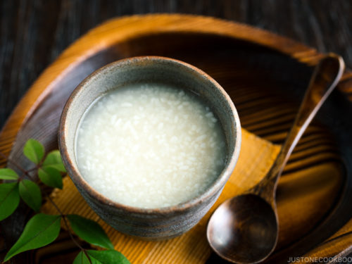

Amakaza
Cooked rice , Water
koji (fermentation starter)
49$

crazy california
Sushi rice,
Nori (seaweed)
Avocado ,
Cucumber
35$
Get ready for an unparalleled culinary experience!
Each bite of our signature dishes will take you on a journey through the
unique blend of Lebanese and Japanese flavors, where fresh spices and high-
quality ingredients harmonize to excite your senses and leave you craving more!
magine a culinary journey that takes you between two worlds of unique flavors!
From Japan, where precision in cooking and artistic touches transform every
dish into a refined sensory experience, to Lebanon, where rich spices blend with
fresh ingredientsto create a vibrant and lively taste. It’s an experience that harmonizes
the elegance and subtlety of Japanese cuisine with the warmth andgenerosity of Lebanese flavors
inviting your senses on an unforgettable adventure. Let every bite transport you between these two
cultures,where creativity meets tradition in perfect harmony!
Amakaza
Cooked rice , Water
koji (fermentation starter)
49$
crazy california
Sushi rice,
Nori (seaweed)
Avocado ,
Cucumber
35$
donburi
Steamed white rice,
Protein (beef,chicken..)
Vegetables (onions,mushrooms..)
40$

rock shrimp
Sushi rice ,
Nori (seaweed)
Imitation crab (or real crab)
Avocado,
Cucumber
46$

salmon volcano roll
tempura flakes, spicy mayo
spring anion ,sesame seeds
59$

smoked salmon belly
tenkasu,
kimchi
55$
kabab
Ground meat (usually lamb or beef),
parsley,Garlic
Spices
55$
kafta
Ground meat (usually beef or lamb),
coriander, parsley,Garlic
Spices(cumin,cinnamon,allspice..)
20$
Sayadieh
A dish of rice with fried fish and caramelized onions, seasoned with Lebanese spices and served with tahini sauce.
45$

Shawarma
Thinly sliced marinated meat
sauce (toum),pickles
vegetables
25$

Fateh
crispy pita bread, chickpeas
yogurt, tahini, garlic
topped with pine nuts and
a drizzle of olive oil
30$

Sujuk or Makanek
Spicy Lebanese sausages cooked with
pomegranate molasses
served with fresh bread
and a side salad.
20$